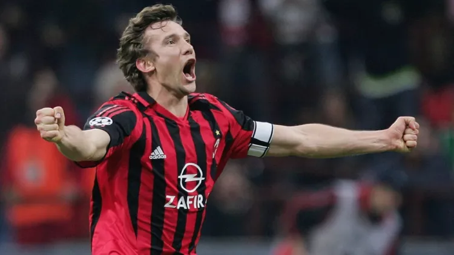
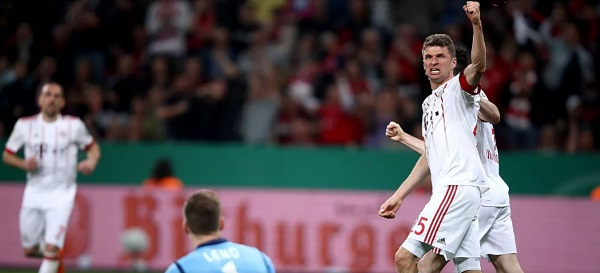

Ao longo dos seus 66 anos de história a Champions League acumula participações de diversos jogadores espetaculares, porém somente alguns deles serão marcados na história da competição. E agora veremos a lista dos maiores artilhiros da história da Champions League!
Artilheiros:
10º Andriy Shevchenko (Ucrânia) - 47 gols
9º Thomas Müller (Alemanha) - 48 gols
8º Zlatan Ibrahimović (Suécia) - 50 gols
7º Thierry Henry (França) - 52 gols
6º Ruud van Nistelrooy (Holanda) - 56 gols
5º Raúl González (Espanha) - 71 gols
4º Karim Benzema (França) - 72 gols
3º Robert Lewandowski (Pôlonia) - 73 gols

2º Lionel Messi (Argentina) - 120 gols

1º Cristiano Ronaldo (Portugal) - 135 gols